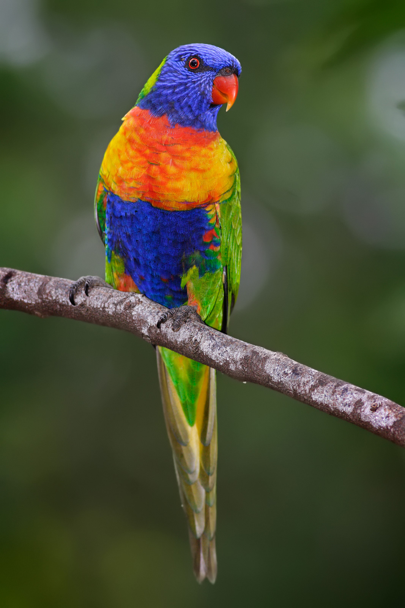

Trichoglossus moluccanus
A medium sized parrot, the Rainbow Lorikeet has a dazzling green back, blue crown, orange breast, yellow neck-ring and browny yellow tail with yellow rump and green secondary feathers. They feed on mainly nectar but can also feed on berries and fruits and sometimes greens.